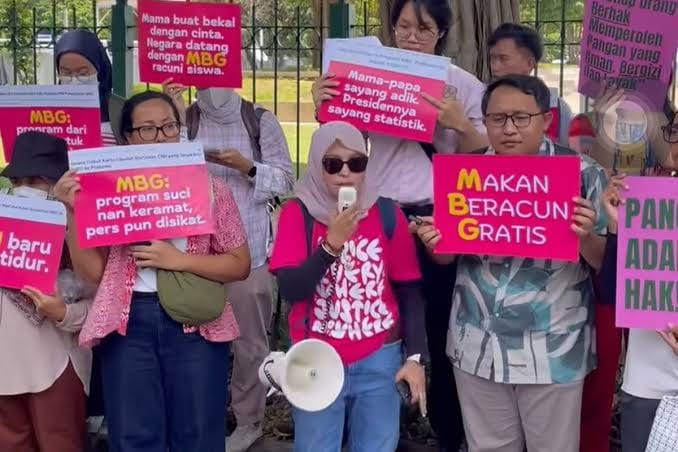

Gerakan "NO MORE MBG" muncul karena adanya kekhawatiran terhadap dampak negatif dari embege yang semakin meresahkan masyarakat. Embege bukan hanya sekadar masalah estetika, tetapi juga berdampak pada kesehatan, lingkungan, dan kualitas hidup kita. Kami melihat bahwa program embege yang ada saat ini seringkali tidak transparan, tidak tepat sasaran, dan kurang berkelanjutan.

Anggaran negara digunakan dengan jelas dan sesuai dengan target anggaran
Program embege ini harus sesuai dengan sasaran yang ditujukan
Mempunyai solusi jangka panjang lebih penting dari pada pencitraan jangka pendek
Pelaksanaan embege perlu dievaluasi secara berkala untuk memastikan efektivitas embege untuk masyarakat